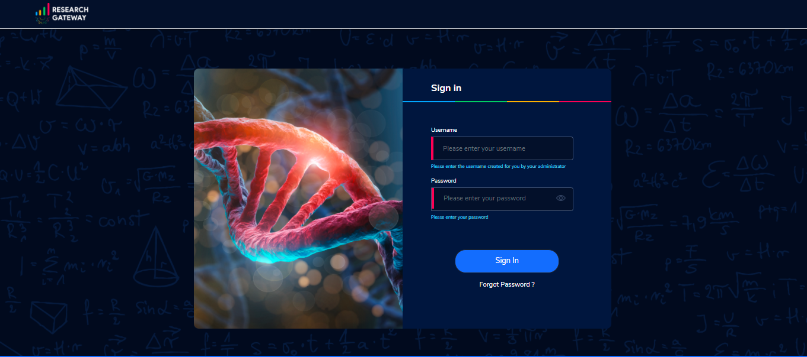
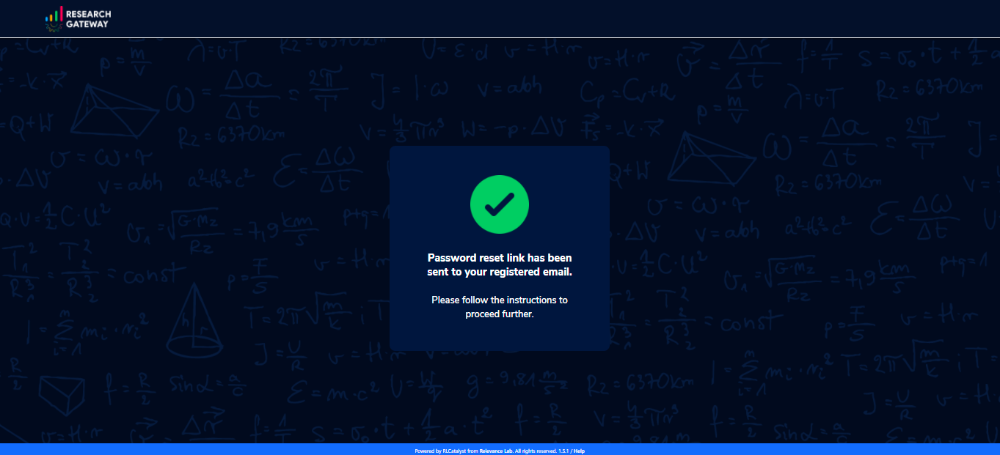
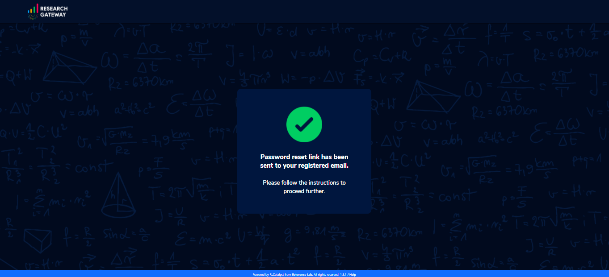

Accessing the RLCatalyst Research Gateway¶
Sign In Process¶
Access the URL provided to you for your instance of RLCatalyst Research Gateway.
Fill the following details
Field |
Details |
|---|---|
Username |
<Username that is used for login> |
Password |
<Password for this user> |
Click on the “Sign In” button. We can login successfully.
Sign Out Process¶
Click on the dropdown bar which is at the top Select “Sign out”option. Through this user logged out from the portal
{kind=link}
Forgot Password¶
In case a user would like to reset his password, the reset password screen can be accessed from the sign in page. Choose the “Forgot Password” link.
On clicking the link the user is navigated to the reset password screen.

Fill the following details
Field |
Details |
|---|---|
Username |
<Username that is used for login> |
E-mail address |
<Registered Email ID> |
Click on “Send Resend link” button. If the provided details are valid, he will get a verification link that has been sent to his email to reset the password. On clicking the link in the email, the user is prompted to change password screen.

The password change is either successful or unsuccessful (this will be like verification success and error screens). The user is then redirected back to the login screen.
 

Note: If a user tries to reset password more than 10 times it will display the message like “Attempt limit exceeded. Please try again”